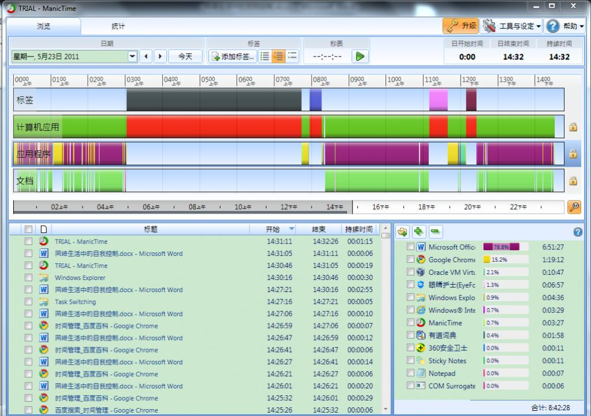

大学期间灯谜鉴赏、毛邓三、马基都拿到了免考，要是再加上近现代史就凑齐了呢…
再回首, too simple, sometimes naive >.<
网络生活中的时间控制
——大学生如何管理好自己的网上时间？
引言
上周三周四，由于上网实名制的实施准备工作，学院机房断网了一整天，这一天内，我参与的项目完全暂停了！细数整栋学院楼也没有多少人影。
我的一个室友基本每天深夜都联网玩Dota（Defense of the Ancients，一种非常流行的基于魔兽争霸的即时战略类游戏）到凌晨2、3点，早上常常晌午以后才起床，我经常这么调侃他：“你的起床时间又只击败了全国1%的用户”。
你是否也和我一样，在电脑上完成作业的时候，常常会在作业中途登陆人人网或QQ等社交平台查看好友的最新动态？
网络已经深深嵌入到我们的生活中，除去传统意义上的网络，移动互联网的概念在近两年渐渐流行起来，网络和我们更加密不可分了！这是一个真真正正的“秀才不出门，便知天下事”的年代！可“网瘾少年”，“电击疗法”等种种名词也随之纷至沓来。
是是非非面前，网络是无辜的，它只是一种快速发展中的科技，没有主观意识，是帮忙还是添乱只取决于使用它的人！那么作为大学生的我们如何才能在纷繁复杂的网络生活中妥善管理好自己的时间呢？
本文从科技的角度探讨一番大学生在网络生活中在时间方面的自我控制，并提出一些应对方法，虽都是个人拙见，却也经过深思熟虑，请老师指教！
摘要
当断网等于断电断水等于，我们已经如离不开电、水一般离不开网络了。
随着网络的发展，网上有太多丰富多彩的内容吸引着人们去关注，身为大学生的我们是祖国民族的未来，我们应该如何在网络生活中管理好自己的时间呢？
本文列举了大学生中存在的一些在网络生活中的缺乏时间管理的现象，并详细分析了各种导致沉迷网络等现象的原因，从科技的角度、以大学生的视角提出了一些帮助大学生合理安排时间、高效利用时间的方法，帮助给出时间控制的“可行解”及“最优解”，并且给出了一个理论上最优的帮助大学生进行作业调度的算法。
关键词
大学生网络 时间管理时间控制 方法效率 网瘾科技 网游 SNS 最优算法
正文
问题综述
首先需要特别声明：
- 本文针对的是大学生。
- 本文所有的探讨都是建立在相同价值观的基础上——即基于这么一个前提“同学们对于什么时候该做什么事情、什么是应该做的、什么是不该做的有一个统一的认识”。
- 虽然在引言中提到了“移动互联网”，但这个概念离现实还有一段距离，因此本文针对互联网的讨论指的都是基于电脑上的。
看到标题，读者可能会想到一个词“时间管理”，它在商业、工作中被广泛应用（在软件工程中就有个职位PM (Project Manager)，管理整个项目的开发进度，进行项目级别的时间管理）。
本文讨论的“时间控制”与“时间管理”十分相近，却不尽相同。
通常意义上的“时间管理”指的是针对特定的活动而进行的 通常以提高效率或生产力为目的的对时间的有意控制，常常意味着“优化”；
而本文要讨论的“时间控制”关注的是“可行”且“最优”，在人们上网的这一整段时间里，时间长短是否合理，时间分配是否恰当，时间利用是否最优。因此本文用“时间控制”一词替代了“时间管理”。
自互联网问世以来，它就以极快的速度蓬勃发展着，据XX的统计，2010年我国共有XX亿网民！（注：忘了修改这里就直接提交了….当时是留着等之后填上数据的=.=）
笔者的专业是软件工程，对同专业2个班共52名同学进行调查统计的结果显示，电脑的覆盖率为100%，每个同学至少有一台笔记本电脑；网络的覆盖率为100%，且所有同学每天的上网时间都大于1个小时！
而对于其他专业的同学，粗略的调查也显示绝大部分同学都有一台自己的电脑。
对于大学生而言，使用电脑上网是一个再普通不过的情景了。即使每天只在网上花费1小时，若不进行时间管理，日积月累，在这个提倡低碳、高效的时代真是太浪费了！
此外，时间管理缺失造成的问题往往显而易见却又难以纠正根除！
在笔者看来，时间管理方面的问题本质上其实只有一个：某时某刻，应该做某事却做了另外一件事！这个问题可以分为以下三个问题：
- 时间花在了完全无关的事情上
- 完成应做的事情时不专心，在其间转而去做其他的事情
- 完成现在来做这件事是可以的，但却不是最高效的
具体到本文所讨论的网络生活中来，再具体到本文所讨论的群体——大学生，便有了以下3个问题：
(1) 不该用电脑、上网的时候却出现在了电脑前、网上
“啊！就到晚上啦！”同学胡某在玩了一个下午的游戏之后惊呼，“这么快啊，我的XX还没写呢！”
动静不分，该睡而不睡、该学而不学，引言中的舍友徐某深夜玩游戏的例子也是这样，“早睡早起，方能养生”的道理人人皆知，我们却常常控制不住自己，无法自拔。
(2) 使用电脑做正事的时候无法专心（注：分心的时间一般不长）
如引言中所言，笔者也常常有这样的困扰，事实上，就在完成这篇论文的过程中，笔者也间歇上“人人网”发几个状态。毫无疑问，这样做容易事倍功半，可是能约束自己持之以恒需要强大的自制力，那么像笔者一样自制力并不强大的同学该怎么办呢？
(3) 感觉自己已经很认真了，正事却总是做不完，或进行回顾的时候发现自己其实没有做完什么有意义的。
笔者的专业为软件工程，同学们常常自我调侃“不到最后一刻绝不交项目，这是软院的风格”。这其实是效率的问题，当前IT业也正提倡“敏捷编程”，其核心正是效率。
那么如何在有限时间内做尽可能重要的、尽可能多的事？这个问题已经刻不容缓了！
笔者还要特别指出的是问题(1)和“网瘾”的区别！
问题(1)乍看之下很类似“网瘾”，并不等同于“网瘾”！
根据定义，网瘾是指上网者由于长时间地和习惯性地沉浸在网络时空当中，对互联网产生强烈的依赖，以至于达到了痴迷的程度而难以自我解脱的行为状态和心理状态。由于花费过多时间上网，以至于损害了现实的人际关系和学业事业。
由定义可知，问题(1)只是“网瘾”的必要不充分条件，即“网瘾”一定可以推出问题(1)，而问题(1)却并不意味着是“网瘾”。
时间管理这个概念是从国外传进来的，但是国外的时间管理是宽泛的，以面向商业为主。毕竟在商业上“时间就是金钱”，而本文专门讨论的是面向大学生的、面向网络的时间控制。
原因分析
要分析上文提出的3个问题，让我们先看一看是什么让同学们在网络上流连忘返？
网络游戏
游戏应该是在许多老师、家长们脑海里闪过的第一词汇，长辈们常常把“玩电脑”等同于“玩游戏”，我一直反对使用“玩电脑”这个词语，很可惜对某些同学而言事实确实是这样的。
这段聊天记录是网游《魔兽世界》在国服开放资料片“巫妖王之怒”的时候传出来的，它被作为一个引人发笑的段子广为传播，事实上它也确实起到了这样的效果。
人们普遍表示出对主人公要游戏不要女友这种行为的不认同，在百度《魔兽玩家》贴吧的一个以此为话题的帖子里，在前20个评论中，3个表示了惊讶和不解，10个表示了用调侃的语言表示了不赞同，5个明确的表示了不赞同，剩下2个是没有意义的回复。
本文不是专门探讨电脑游戏的，因此也不想在“为什么同学们要玩游戏”这个问题上纠缠过多，本文要讨论的是在玩游戏的基础上为什么选择玩网络游戏？
在笔者看来，单机游戏的关系是“人vs电脑”，由于AI（人工智能）的缺陷，人在找到一些窍门之后总是能够轻松地胜过电脑，然而人与人之间的较量往往充满了变数，也充满了惊喜！喜欢网游的同学常借用毛主席的一句话“与人斗其乐无穷”。
此外，在大学生活中，宿舍就是你的家，兄弟姐妹们要一起玩游戏增进感情，单机游戏在此时就心有余而力不足了。
网络游戏主要造成问题(1)，因为网游需要投入大量连续的时间，不会出现“写论文到一半，去玩个2分钟网游再回来的情况”。
SNS
SNS（Social Network Site或Social Network Service）社交网站/社交网站服务，是旨在帮助人们建立社会性网络的互联网应用服务。这个名词可能比较陌生，但它的耳熟能详的代表性产品有：QQ、人人网、新浪微博、百度贴吧等。
QQ自然不必多言，对大学生和大部分学生而言，QQ号几乎是必备的，在我对学院内外的同学们的调查结果显示，每个同学都至少有一个QQ，虽然他可能不经常登录。
今年5月4日，人人网在纽约交易所上市！人人网号称是中国最大的社交网站、中国的Facebook（一家全球最大的社交门户网站）！在调查的52名同学里，94.23%的同学都有人人网账号，当然部分原因是因为人人网的用户主体就是学生。
新浪微博，许许多多的大牌明星们都进驻了微博，李开复老师专门写了一本书《微博：改变一切》，最近热门的事件如“抢救流浪狗”、“解救失散儿童”等活动都是首先在微博平台被开始的。
那么SNS真的有那么大的吸引力吗？
笔者认为是的！小学升初中、初中升高中、高中升大学，每次升学都意味着和一些旧朋友渐渐减少联系和和一些新朋友的结识。
对于结识新同学，或增强感情联系，社交平台是一个很好的去处。
对于旧朋友，大多数人都不想完全失去联系，社交网站提供了一个平台，一个能够展示自己最新动态、获知他人最新动态的平台，在中国这样一个将人与人之间的关系看得非常重的地方，这几乎是必不可少。
为什么在去年年底的3Q大战中，QQ有胆量发出《道歉信》，威逼广大用户对其与360进行二选一，笔者认为QQ所依仗的便是用户在QQ中的好友信息记录！以笔者自身为例，从2004年申请QQ号，到现在已有近7年的时间了，全部初中同学和高中同学都能通过QQ联系到，手机的通讯录里也没有那么全。一旦停用QQ，很多同学就不知什么时候才能联系的上了。
但是痴迷SNS到极致就可能在半夜起来看状态更新！不是痴迷SNS，而是痴迷与朋友们、同学们之间的那股联系！
SNS主要造成的是问题(2)了，因为它不要求长时间的关注，但需要频繁的关注。
另外还有一个必须要提到的是“Email”，Email也可以算作是SNS，但是它已经偏工作性质了，所以大学生基本没有沉迷Email的。但Email也可能因新邮件也可能影响到个人心情，所以有观点认为应该在工作结束之后在查收邮件，这是仁者见仁、智者见智的问题了。下文也将不再讨论Email。
娱乐
娱乐是一个很宽泛的词，包括各种有关娱乐的信息，但这里只讨论视频和小说。因为其他信息是有限的，不容易沉迷。
关于视频，笔者要特别指出的是动漫，日本动漫，在同学们中喜欢日本动漫的不在少数，笔者宿舍有一名同学便是“狂热”的动漫爱好者，另一名同学每周五也会准时看《火影忍者》的更新。
关于小说，这里特指“网络小说”。笔者本人天天看网络小说。网络小说与普通小说的区别根本在于发布方式的不同，普通小说是在作者精雕细琢之后由出版社发行，而网络小说是作者完成一部分便在网上发布一部分。这根本的区别便导致了网络小说的一大特点——鱼龙混杂！
大部分网络小说都比较长，字数多，令笔者印象深刻的一本书《从零开始》，四五年前它就已经开始连载了，直到现在还没有写完，总字数已经以千万记。
动漫和网络小说很类似，他们都是定时更新的，这就会造成问题(2)——频繁的关注。
但视频和小说也可能造成问题①，假设你在遇到一动漫或者一本小说的时候它已经连载了很久了，那么你可能就将花费一天的时间来跟上进度，从而导致了问题(1)！
不良信息
这里指的不良信息指的是色情信息，不可否认的是，大学生中没接触过色情信息的同学应该是屈指可数，然而绝大部分同学不会将其当作每天上网的目的，如果那样的话，我们就应该反思精神文明建设的问题，本文就不多讨论了。
网购 & 团购
笔者身处嘉定校区，出行不便，也极少逛商场，于是许多商品都是网购而来的，但是沉迷网购的同学笔者真的没有见过也没有听过，因此在本文中将不予讨论。
团购更是如此，因为团购的商品取决于商家，这是商业模式决定的。所以本文也不予讨论团购。
正事
接下来的几项都是传统意义上的正事，在普世价值观里是不会被反对的：看新闻、查信息、工作、学习等。
这里要注意的只有一点：身体健康！
其他
由于笔者能力所限，总还会有一些遗漏之处，但本文的大部分篇幅都将描述上述方面。
解决措施
(1) 不该用电脑、上网的时候却出现在了电脑前、网上！
正如“问题综述”中所言，笔者并不认为问题(1)等同于“网瘾”，但它们的解决措施显然是类似的。
在介绍网瘾的资料中特别指出“由于某些不法业者恶意炒作、无照经营‘戒网中心’在社会上造成严重不良影响，已于2009年12月被卫生部疾控局明文予以否定。”
这些“戒网中心”正是国内的一种戒除网瘾的措施，最出名的当属杨永信与他的戒网中心。戒网中心内是近乎军事化的管理，最引起争议的是“电击疗法”！
国外的青少年对网瘾也是深受其害，那么国外的做法是什么呢？韩国不挨打，学骑马，军事体能心理训练三合一；德国不吃药，去赶海，父母可陪同；日本不责怪，研制专用手机，能查资料不能游戏。
笔者的观点是，解决问题(1)就好比治国，有这么一句话“治大国如烹小鲜”！治国有德治和法治之分，解决方法也可如此类比，杨教授的戒网中心、电击法那样的方法显然就是法治了，而且是严刑峻法，然而严刑峻法治标不治本，而纯粹依靠德治——个人道德、价值观的约束也显得过于幼稚了。
所以我们应该德法结合，以德为体，依法为表！
笔者认为，“德治”需要针对具体情况具体分析，找到沉迷网络的起因，破解它；而“法治”需要建立的是一种通行的制度，它有兼容性，能普遍适用于大部分情况，王子犯法与庶民同罪！
大学生大都已经成年，有自己的责任和担当。他们偶尔也会冲动在网络上消耗太久，但在离开网络时又往往会对自己的所作所为感到后悔，我的室友也时常对他自己的作息时间表示不满。
而我们的母校同济大学在防止学生过度沉迷网络方面又是怎么做的呢？
同济是一所很大的学校，在“德治”方面的措施不可能针对具体的学生，但她提供了心理咨询室，如果有这方面的困扰，也可以向老师们倾诉。
在“法治”方面，同济有如下规定：
- 大一（至少是大一上学期）不建议或不允许学生带电脑到宿舍。
- 在四平路校区，平日晚上11点前后断电，周末12点断电，某些节假日通宵供电。但在嘉定校区却是通宵供电了。
我们专业大一上学期就是这样的，刚开学的时候禁止学生带电脑到宿舍，直到后来期中之后由于专业课需求才逐渐开禁。
我很赞同限电的措施，用数据说话，在四平路校区时，我们宿舍的平均睡觉时间是11:00到12:00之间，而来到嘉定校区不断电之后，我们宿舍的平均睡觉时间是12:30~2:30之间。
然而同济并没有给出更多更具体的硬性规定，在学校机房、图书馆的机器上我也没有看到任何相关的软件、文档了。
本文想从科技的角度给出一些方法，笔者先提几点在“法治”方面的建议。
(1) 定时中断
以浏览网页为例，同学们在网络上无法自拔往往是因为：在浏览当前页面时很难中断，而当前页面结束要进入下一页面的时候又往往拖延、不果决，想着“就再看一页，下一页看完就关掉”，于是一页一页地继续下去，直到某个不可抗拒因素来临。
既然如此，何不周期性的强制中断！
笔者在某一门专业课上的期末项目完成的便是这么一个“眼睛护士”，它能够根据设定，周期性地黑屏，并接管鼠标键盘输入，强制休息一段时间；也可以定时关机，到特定时刻强制使得电脑进入休眠状态，这样也不会丢失信息。它还能够在强制休息的时候显现之前预设好的用以激励、刺激的话语！以笔者的专业水平就已经能够写出这么一个程序了，网上也早就有这样的程序了，只要你愿意安装，只要你愿意对自己使用电脑的时间进行限制！
唯一的隐患是，在处理某些重要事情的时候若是突然“中断”了，可能会造成很大后果，比如有几次我和父母亲视频聊天的时候屏幕突然黑了，只能等过了5分钟才恢复。但这其实不是问题，需要的只是在软件中设定什么时候可以强制中断，什么时候不能强制中断。
乍看之下，这又将主动权交还给了人，能够让一个人自己主动限制自己吗？如果不行的话，不是还可以让别人来设置吗。虽然这可能不一定合适。
(2) “自残法”
当然是机器“自残”，当要限制某种科技的时候，第一种方法就是像上一种方法一样用另一种科技去压服它，第二种便是通过限制此科技的必要条件而削弱它。
2001年，笔者家里有了第一台电脑，这一用就是7年，直到2008年更新换代。7年里，笔者一直使用着128MB内存，733Hz主频的CPU，（这样的配置约是现在主流笔记本电脑的性能的1/5不到），当时《三国志9》这款游戏还是勉强可以运行的，而《三国志9威力加强版》则一运行就死机了。我现在还很感谢那台电脑，是它让我没有机会沉迷游戏！
目前笔者使用的是英文版Windows系统，第一次装这个系统的时候只是为了学学英语，原本准备马上换回中文版，但在我发现在英文版下无法运行中文版《魔兽争霸3》时，我一直使用英文版Windows直到现在！
再举一个例子，关于笔记本电脑的触摸板。大部分同学的个人电脑都是笔记本电脑，这样携带比较方便。而触摸板比起鼠标来，显然无法完成那么多游戏里需要的微小操作，因此，当你决定禁止自己玩游戏一段时间的时候，只需要把鼠标扔一边就好了！这样做的唯一副作用——操作不便将在熟悉触摸板操作之后消失的无影无踪。
上述两种方法中，“自残法”主要针对的是游戏，因为游戏要求的硬件环境比较高；而“定时中断”就比较偏向于查看网页这样的低要求操作了。
接下来我想说下“德治”方面的建议，因为“德治”的目标是从根本上祛除，又在原因分析中说明的只有“网游”和“娱乐之视频、小说”容易造成问题(1)，所以我只讨论这几方面。
(1) 根除网游
因为是要“根除”，所以必须让网游显得不再那么好玩。理论上的方法自然有两种，一是让网游真的变得不好玩，这真的很难啊，而且这个网游不好玩了，可能还有那个网游好玩；二是找到比网游更好玩的东西！笔者认为这才是根本！
前边介绍过的国外的各种戒除网瘾的方法无一不是通过转移注意力，介绍一种可能吸引青少年的活动，从而将少年心中网游的地位取代。
(2) 根除小说
说实话，笔者在这个问题上并没有什么发言权，因为笔者也曾浪费一大段时间看网络小说，并且至今如此，我只能分享一下在“根除小说”方面的一些经历经验，动漫应该是类似的。
从头开始看一本网络小说的时间可能是2小时，可能是半天，可能是一天，可能是一周！我给自己的条件是“不看已经达到30万字以上的小说”，这样会好很多！
(2) 使用电脑做正事的时候无法专心
有个专门的名词来描述这种现象Internet Distraction，译成中文就是互联网分心，无法集中注意力完成自己的工作。
类似于子问题(1)，这里也可以应用“自残法”，但具体做法却不一样了。
(1) 如果要做的正事不需要网络而分心的事情在网上，那么断网，完成工作，上网就是最好的解决方法了。
(2) 如果分心的事情和网络无关，就得需要介绍一个名词“虚拟机”了，它指的是通过软件模拟的具有完整硬件系统功能的、运行在一个完全隔绝环境中的计算机系统。在IT业，虚拟机常常被用来测试，因为它不会污染到原系统，所以可以放心大胆的进行测试。
我们的目标就是构造一个专门的工作环境，使的能够心无旁骛地完成工作！据笔者多次测算，在虚拟机软件Virtual Box中创建一个Windows XP系统的虚拟机只需要不到4分钟的时间，以后每次进入虚拟机系统只需要不到30秒的时间。
唯一的挑战在于非本专业的同学们可能根本就没有听过这样的软件，更别说用过了，而这只能期待虚拟机软件厂商将软件制作得更加简单易用！
(3) 如果要做的正事就在网上，离使你分心的网址只有一个按钮的距离，那又怎么办呢？笔者的解决办法是“浏览器插件”！众所周知，浏览器是用来浏览网页的程序，而插件也是一个程序，能够对浏览器的功能进行补充，浏览器使用插件，就能做到它原本做不到而插件能做到的事情。
仍以笔者为例，笔者使用的是chrome浏览器，在安装完StayFocusd插件之后通过插件的设定可以屏蔽某些特定网址一段时间，比如它可以设置成每天最多登录www.baidu.com 20分钟。
而这种方法的缺陷在于：目前国内大部分的浏览器都是微软公司的IE浏览器，其中一部分是IE6，一部分是IE7或IE8，而几年前恶意插件闹的很凶的时候都是针对这几款浏览器的，再加上其浏览器本身的设计问题，在IE上的插件并不多，可能并不能找到称心如意的。但新版本浏览器IE9已经发布几个月了，这一情况会渐渐好转的。
在IT业中，只有想不到，没有做不到！
(3) 感觉自己已经很认真了，正事却总是做不完
(或进行回顾的时候发现自己其实没有做完什么)
这个问题其实意味着缺少优化，原本的情况是只找到了一个可行的解，但这个解不一定是一个最优解。
要想优化流程，必须得有一个标准，如何才算是最优？显然全部任务都完成了、而且完成得很好、并且耗费时间很少是最优情况。然而这是理想情况，在实际生活中的大部分情况都不可能达到的，实际需求往往是在有限的时间内完成一大批任务，这些任务有轻重缓急，有重要和不重要、紧急和不紧急之分。
其实重要和紧急正是传统的时间管理方法里帕累托原则的术语，它将所有任务分成四类，A重要且紧急的，B不重要且紧急的，C重要但不紧急的，D不重要且不紧急的。优先完成A类任务、必须立刻做，在A类任务之后完成B类任务，一旦没有AB类任务就把C类任务当成紧急来完成，等到有闲工夫的时候完成D类任务。
当局者迷，应该先统计一段时间内的操作情况，才能做出分析并改进效率。网上也早已经有了这样的工具，比如ManicTime：

它显示我写论文以来花费了78.9%的时间在Word2010上，15.2%的时间在Chrome浏览器上……于是对于电脑、网络的使用情况便可以了如指掌了。
此外笔者还给出一种针对作业的混合调度算法：
所有的作业分为两种——周期性作业和偶发性作业，比如每周都有的英语作业就属于周期性作业，而某专业课只需要在学期末提交一个期末项目，这就是偶发性作业。
对于周期性作业需要知道它在每个周期内的开始时间、和提交截止时间。
对于偶发性作业需要知道它的作业布置时间和提交截止时间。
这个算法还有一个前提——假定每个作业之间没有需求关系，即英语作业不会要求学习了某专业课完成此专业课作业之后才能完成，反之亦然。
算法假定每个作业的提交截止日期是确定且已知的。
算法还必须知道一个大周期，即对于所有周期性作业的周期而言的最小公倍数，对于同济的具体情况，同济是分单双周的，如果单双周课表不同的就以2个星期为一个大周期，否则以1个星期为一个大周期。
此外再引入一个名词“规划”，意指在当前时间，已知当前所有任务，根据规划的原则给出它们的优先级顺序，即判断先完成什么任务，再完成什么任务。
规划的原则很简单：对于所有的任务，提交截止时间越早，优先级越高。
于是开始调度，从学期开始进行第一次规划，按规划的结果操作，每次有新作业布置或者旧作业完成的时候重新进行一次规划。
对于周期性任务的操作其实是Deadline Monotonic Schedule，对于偶发性任务的操作其实是EarliestDeadline First算法调度，这两个算法都已经在学术上被证明在相关领域是最优算法。
当然，这个算法理论上在前提满足的情况下，可以保证只要有能力就能够按时完成所有的作业。然而人毕竟不是机器，机器可以年复一年日复一日执行一项操作不出错，人做不到。所以在实际中这个算法能起到的也只是一个参考的作用。
结语
本文只是讨论了网络生活中进行时间管理的一些相关事项，无论是时间控制抑或是时间管理，其实质是人对自身进行规划和约束，这可以放大、泛化到一般生活中。随着移动互联网概念的深化，网络的概念只会越来越广，大学生能否在重重诱惑中独善其身，往大了说关系到国家和民族的未来！
但其实归根结底，最重要的是自制力，只要有了强大自制力，本文所讨论的许多问题都化为浮云。一切一切都是以人为本！
每一次科技革命，都给人类的生活水平带来极大的提高，但也会给人类带来极大的冲击，本文谨从一个大学生的角度出发，基于前辈学者们的理论基础，提出一些自己对时间控制的看法，希望为和谐社会、全面发展、光阴不虚度尽上一片微薄之力。
参考文献
《时间管理》—— 约翰·阿代尔著
《时间管理知识全集》—— 李来宏编著
《时间管理幸福学》—— 吴淡如著